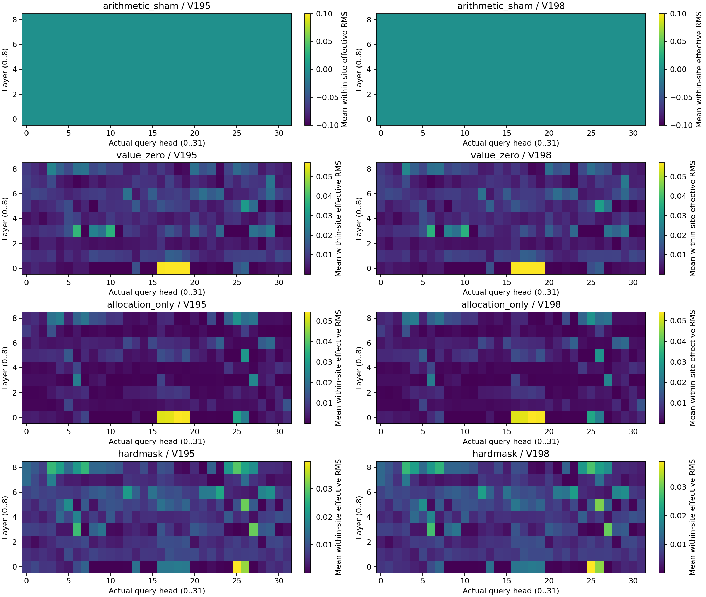
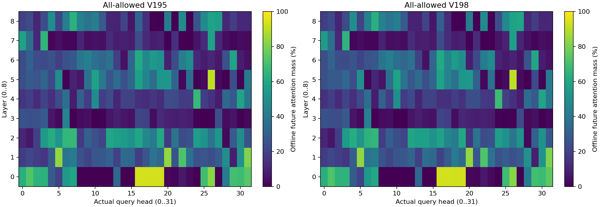

2026-10-04 · 最新：把有效连接拆成“内容”和“权重增量”测试 · 代码、数组与录像
删掉一份“错误未来信息”，就能抓对牛奶吗？这次结果不支持。
此前：牛奶移12厘米时，只切前9层“未来画面向量 → 当前画面向量”的连接，两组都能抓牛奶。移到15、18厘米，这个改法又失效。所以还不能说找到了“认牛奶的区域”。
12条MuJoCo实际执行、全部1620处真实内部数组的核验已完成。不是只看生成视频，也没有拿热图替代抓取结果。
1. 这次到底改了网络哪里？

内容是某个向量实际带来的数字；读取权重决定这些数字在当前计算中占多少份量。切掉未来连接，会同时去掉未来的贡献，并把权重重新分给其余来源。
| 操作 | 改了什么 |
|---|---|
| 只去掉未来内容 | 保留同一处Q、K和读取权重，只把未来200个V向量置零。 |
| 只加入重分配增量 | 保留未来原有贡献，把切边后其余来源多得到的贡献加进来。 |
| 原始切边 | 未来贡献移除，其余来源重新分配权重。 |
改动仅限首轮、前15次去噪、第1～9层、50个当前视觉向量的读取。动作直接读取未来的连接保留。首轮16步执行后重新拍照，后续7轮恢复原生推理，每条共128步。
195／198是两份未来生成的初始随机数组；动作初始噪声始终195。它们不是两张照片或两句指令。这次只有一个固定初态、两份未来起点，不能当成功率。
2. 12条实际执行，全部结果
| 条件 | 未来起点195 | 未来起点198 |
|---|---|---|
| 原生 | 奶酪盒，第68步 | 牛奶，第64步 |
| 连接全保留 | 奶酪盒，第70步 | 牛奶，第64步 |
| 同数值计算对照 | 奶酪盒，第70步 | 牛奶，第64步 |
| 只去掉未来内容 | 未满足严格抓起 | 奶酪盒，第70步 |
| 只加入重分配增量 | 奶酪盒，第66步 | 奶酪盒，第67步 |
| 切边：两项一起改变 | 牛奶，第61步 | 牛奶，第64步 |
“未满足严格抓起”不是完全没动：该条最后接触了奶酪盒，但未达到连续5帧的判据。判据是两侧指垫接触、抬高超过2厘米、连续5条状态记录；抓起不等于完成放篮任务。
事先预测是：只去掉未来内容，就应让195改抓牛奶、198保留牛奶。两条都没满足。全连接和同数值对照保留原生抓取类别；8条完整旧对照的动作、129份物理状态和全部8轮模型记录复算一致。
当前：切边：两项一起改变／起点195：牛奶，第61步。这是MuJoCo实际执行；抓起不等于最终放篮成功。
3. 内部数值告诉了我们什么？
不是改动越大，越能抓对。在原本抓牛奶的198组，只删未来内容使首轮XYZ动作与对照的RMS差达到0.1416，却改抓奶酪；有效切边的差只有0.0131，仍抓牛奶。这些是归一化动作数组的距离，不能读成厘米或成功概率。
这批支持继续查内容与读取分配的共同作用。还不能断言存在一份“奶酪动作记忆”，也不能排除整体信号幅度、下游非线性和后续反馈的影响。
展开真实head热图、数值和复现范围


保存并核验12组×15次×9层＝1620处实际Q/K/V与官方attention端点。每个head128维，32个query head共享8个KV head（h读取h//4）。真正的head轴取自输出投影之前，未把投影后的4096维随意切块。
“只加增量”实际用FP32(Z0)+(FP32(Zk)−FP32(Zv))再转BF16：Z0全连接、Zv未来V置零、Zk硬切边。它是人为拆开的局部数组干预，可增加幅度，不等于合法的归一化softmax，也不能算可加的因果百分比。同一Q/K仅指同一个计算位置；后续各组状态允许分岔。
首轮360次网络计算、后续2520次，合计2880次；1536条实际动作转换、96份完整推理记录、77组后续整噪声配对通过。CPU分析没有新增模型、物理或CUDA调用。
公开全部12条录像、96份执行模型记录、全部统计NPZ与1620处来源SHA。每组公开第一处完整Q/K/V与端点、第一次去噪的37个层边界；其他完整原数组保留A6000。公开摘录不是全部1620份PT。
4. 有没有类似大脑的“语言区、运动区”？
可能有功能分工，但我们还没有给Cosmos3找到这样的区域。要先比较不同任务中哪些内部单元更有反应，再暂时抑制这些单元，检查特定能力是否受损；还要用相同数量的随机单元作对照。只看哪里最亮不够。
NAACL 2025：The LLM Language Network按脑科学方法，在18个语言模型中找对句子比乱码更敏感的单元；再在其中10个模型做消融，检查语言任务损伤并与随机单元比较。这比单纯做热图更接近“这个部分确实有某种功能”。这些是内部坐标的功能定位，不是模型长出了真实海马体。
CoRL 2025：Mechanistic Interpretability for Steering VLA Models干预少量MLP单元，改变机器人行为；功能会混合且依赖情境，不能据此给当前Cosmos层号起“运动区”的名字。
Cosmos3的文字处理与生成分支本来就各有一套attention、MLP参数；当前视觉、未来视觉和动作共用生成分支。这是设计分工。是否学出更细的功能，需要像上述论文一样做选择性干预。
5. 下一步只查这条通路里的更小部分
现在不扩大场景。把已确认有作用的前9层读取通路继续拆成head小组，测少量head能否保留正确抓取、修正错误抓取；保留自身替换和等强度随机对照。热图只能提供候选，不能直接把最亮的格子叫“牛奶区”。该细化实验尚未执行。